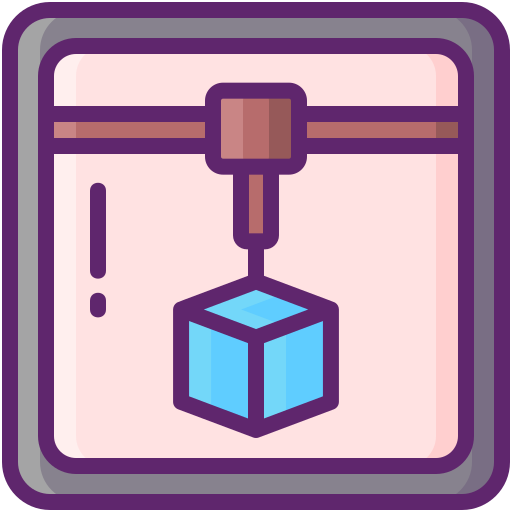

Escolha um tipo de arte
Escolha uma das opções para descobrir qual é o melhor museu ou teatro indicado para você.
Escolha um botão surpresa
Clique em um dos botões abaixo das imagens para saber um pouco sobre determinada tecnologia.
